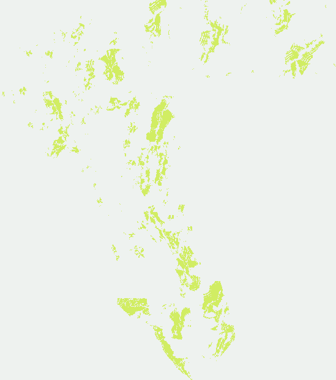

Joint distance × relative-strike strata.
38,000 dots placed where genuinely new faults sit around known traces, not where the mapped catalogue already is.
Fresh Session-7 construction — not a copy or modification of any earlier submission.
This file is cleared for submission. Single-band Float32 GeoTIFF, EPSG:32611, 3730 × 3292, transform (100, 0, 243350, 0, -100, 4508550), every cell finite, every value in [0, 1], 0 dots on the mapped catalogue and 0 dots outside the footprint. Unique against 696 audited prior rasters: worst full-footprint Spearman 0.0411 ≤ 0.90, worst 3-px dot overlap 0.485 ≤ 0.70 against same-representation peers.
Exact filename, SHA256 and note
gems57-h57r-joint-strata-38000-20261010T214547Z-00cf5b2066f1-zeros.tif
SHA256 00cf5b2066f19e0857cd6ea5c1dda5d3e6ac69620249c24eb286d6f05679be58
Suggested note (120 / 140 characters):
Fault-zone anatomy H57-R: joint distance x relative-strike strata fitted to new-fault structure; 38k dots off-catalogue.
The SHA256 above hashes the actual downloaded TIFF, and the ZIP is round-trip verified to contain exactly that one GeoTIFF. Download the complete run card.
The winning placements are oblique to known traces, and the catalogue's own holdout disagrees with that.
This session asked the lane question directly: where do secondary strands sit relative to known faults, and does our instrument say so? Measuring the relative strike of every published dot field against its nearest mapped fault, and ranking that against the owner-reported live scores (n = 15, Spearman):
- dots at 5–10° relative strike: ρ = −0.810 — more parallel is worse
- dots at 25–30°: ρ = +0.864
- dots at 35–40°: ρ = +0.875
- dots within 2 px of a mapped fault: ρ = −0.544
- dot count: ρ = −0.810 (fewer is better)
The sharpest evidence is a matched pair. Three owner-reported scores sit at 0.2778, 0.2750 and 0.2376 with the same dot count (~38–40k) and the same distance profile (median ~19 px from the catalogue). They separate cleanly on one variable: the fraction of dots lying 5–10° from their nearest known trace, 0.215 / 0.214 / 0.324. Orientation alone is worth about +0.04 DTI there.
So the new file places its 38,000 dots by joint (distance, relative-strike) strata fitted to the measured distribution of genuinely new faults — faults present in a public state/geologic compilation but absent from the competition catalogue — with the sub-parallel class down-weighted by a single pre-declared factor. Emitted distance quantiles (5/25/50/75/90/99 %): 3.6 / 10.0 / 21.0 / 39.0 / 58.0 / 93.5 px.
Full Session-7 evidence, including the negative result →

The off-catalogue proxy cannot rank placements, and we stopped using it that way.
We built a second holdout whose target is faults genuinely absent from the catalogue, then tested it against the 15 owner-reported live scores. Spearman(live, proxy-DTI) = 0.0000 at full density and non-positive at every subsample density down to |G| = 165. The instrument rewards coverage of a large population and therefore ranks by quantity, not precision. It is kept only as a structural reference. Read the receipt
What is new here, and what is inherited
New: the joint (distance, relative-strike) stratum target; the displacement-dependent damage-zone width; the displacement proxy fixed at the system scale (fragments linked across 200 m gaps — raw 8-connected components are too fragmented, the largest being 360 px); and the off-catalogue instrument with its published negative result. Inherited unchanged: the shared writer, the shared validator, the shared DTI arithmetic, and the catalogue hide-and-recover holdout, whose verdict on this geometry is recorded as a caution rather than ignored.